Book VIII · The Scriptures of the Many Paths
The Tao of the Kernel
Sayings on simplicity, emptiness and the uncarved codebase.
- 1The Kernel That Can Be Compiled15 verses
- 2The Uncarved Codebase13 verses
- 3The Lead Who Is Barely Known15 verses
- 4On Knowing Enough14 verses
- 5The Parable of the Ten Thousand Switches15 verses
- 6The Uncarved Interface16 verses
- 7The Tao of the Bug14 verses
- 8The Tao of the Test15 verses
- 9The Tao of the Deploy15 verses
- 10The Tao of the Meeting14 verses
- 11The Quiet Rearrangement13 verses
- 12The Tao of the Deadline15 verses
- 13The Tao of the Self-Documenting Code13 verses
- 14The Tao of the On-Call12 verses
- 15The Tao of the Senior Engineer15 verses
- 16The Tao of the Benevolent Dictator15 verses
- 17The Tao of the Pull Request13 verses
- 18The Tao of the Bug Report15 verses
- 19The Tao of the Code Review13 verses
- 20The Tao of the Answer That Depends12 verses